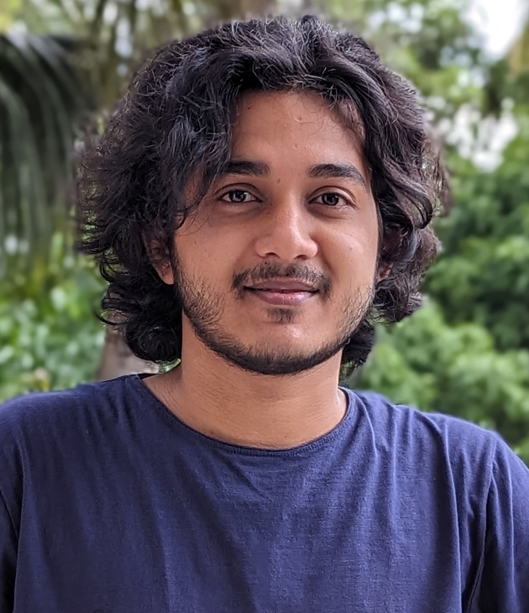
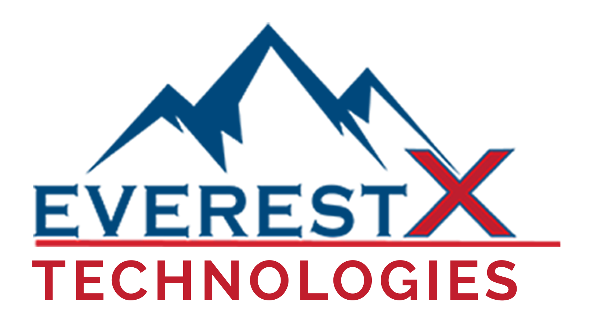
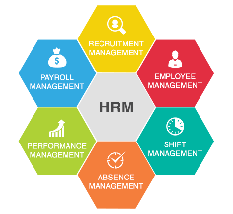
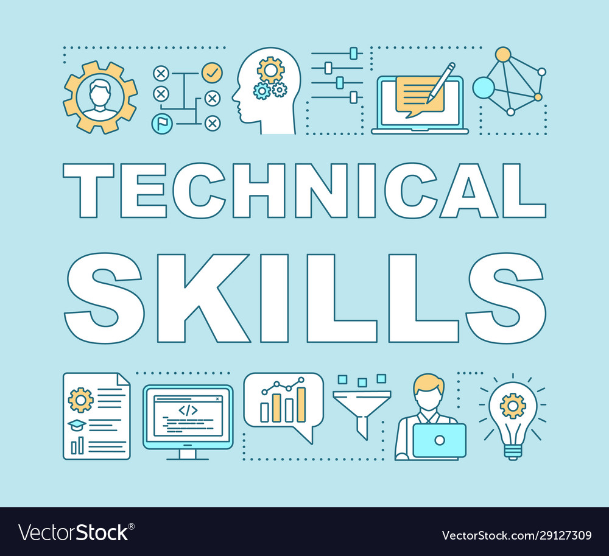
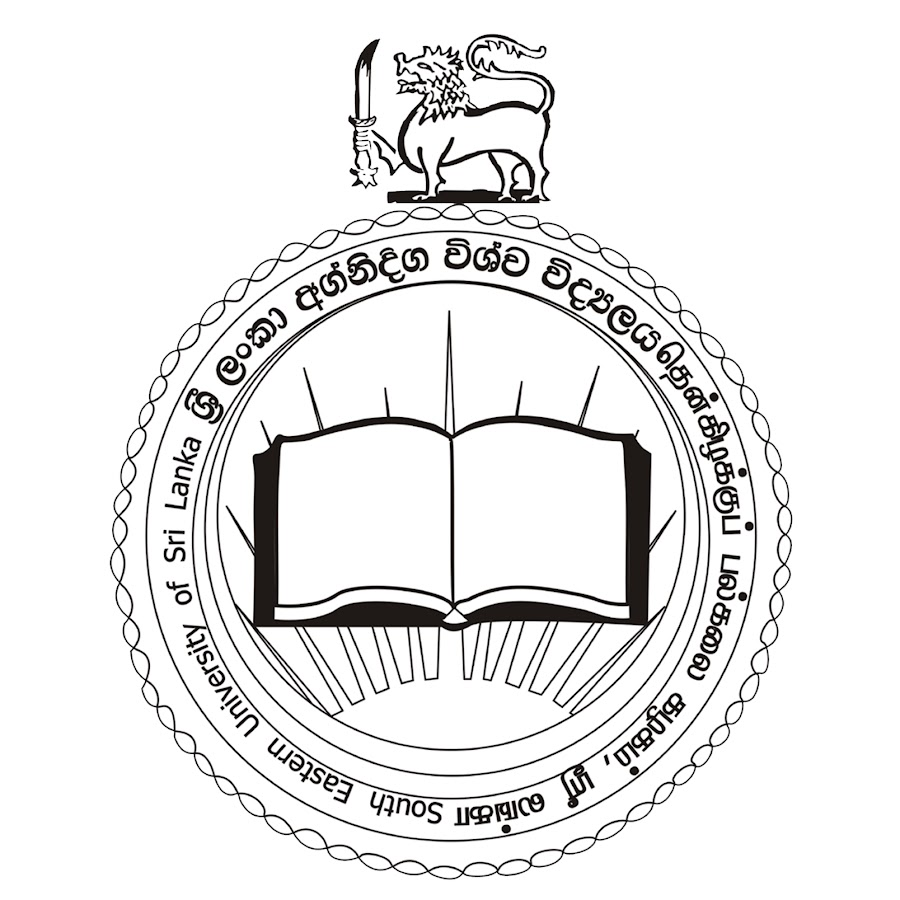

|
Navid Mohammed
I'm an undergraduate student pursuing a degree in Electrical and Electronic Engineering, driven by a deep curiosity for how technology shapes the world. While my academic background provides a solid foundation in hardware and systems thinking, I’ve naturally gravitated towards the world of software engineering. Through coursework, internships, and self-driven projects, I've developed a strong command of programming, problem-solving, and building real-world applications.
I'm interested in backend development, cloud infrastructure, and creating smooth, reliable systems that solve everyday problems. I enjoy working with technologies like Java, Spring Boot, and AWS, and I'm constantly exploring new tools and architectures like microservices, serverless computing, and containerization. Beyond technical skills, I value clean code, collaborative development, and lifelong learning. My goal is to bridge the gap between hardware knowledge and software innovation to build powerful, efficient, and scalable tech solutions.
Email /
CV /
LinkedIn /
Github /
Medium
|

|
| 
| | | | | | EverestX Technologies, Colombo, Sri Lanka
Software Engineer Trainee
May 2024 - Aug 2024
• Designed and Implemented Restful APIs for the ‘MyCity’ hotel booking application using Spring Boot.
• Developed APIs for CRUD operation on hotels and rooms for the admin panel.
• Contribute to a microservices architecture by building and integrating independent modules.
• Implemented Image upload functionality using AWS S3 pre-signed URLs for secure file storage.
• Built APIs with Pagination support and authored a technical article on Medium to document the implementation.
• Integrated AWS Lambda function to handle serverless HTTP request within the backend.
• Conducted comprehensive API testing and documentation using Swagger and Postman collections.
• Managed Entity relationships and handled database schema design and optimization.
• Followed clean code principles, MVC architecture and version control using Git and GitHub.
|
| 
| | | | | | | | | | | | | | HR Management Full Stack Application
• Developed an HR management application to manage employee details, using Java for backend and React.js for frontend.
• Implemented CRUD operation for employee records, including personal details.
• Utilized RESTful APIs to connect frontend and backend services with secure data flow and efficient data handling.
• Integrated Spring Data JPA and MySQL to persist employee data with relational database support.
• Applied role-based authentication and JWT security to restrict access to authorized users.
• Followed MVC architecture and Git for version control and collaboration.
• Used Postman for testing the APIs.
|
|
| | | | | | | | | | | | | | To-Do Web Application
• Built a full stack To-Do list web application with Spring Boot backend an Thymeleaf frontend to manage personal tasks.
• Implemented CRUD functionality (create, read, update, delete) for tasks with features like toggling.
• Developed RESTful APIs using spring boot for smooth data communication with the frontend.
• Integrated MySQL database with Spring Data JPA for persistent task storage.
• Followed clean code and version control using Git.
|
| 
| | | | | | | | |
| | | | | | | | | | South Eastern University of Sri Lanka
Programming Language: Java, Python, SQL
Beck-end Tech: Spring Boot, Hibernate, Spring, JDBC
Front-end Tech: ReactJS,HTML, CSS, Java script
Databases: MySQL, PostgreSQL, NoSQL
Version Control: Git, GitHub
Cloud: Amazon Web Services (AWS – S3, Lambda function), Docker, Kubernetes
|
| 
| | | | | | | | |
| | | | | | | | | | South Eastern University of Sri Lanka
Bachelor's in Science (Engineering) specialized in Electrical and Electronics
Jul 2022 - Jul 2026
|
|
| | | | | | | | | | | |
| | | | | | | | | | Trincomalee Zahira College
G.C.E Advance Level in Physical science
Mar 2017 - Aug 2019
|
|
{kind=link}